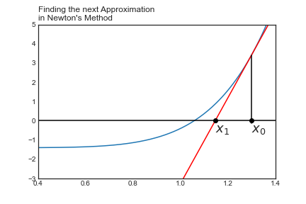

Newton’s Method
import matplotlib.pyplot as plt
import numpy as np
import sympy as sy
plt.style.use('seaborn-white')
<ipython-input-1-c4ec050ecea6>:4: MatplotlibDeprecationWarning: The seaborn styles shipped by Matplotlib are deprecated since 3.6, as they no longer correspond to the styles shipped by seaborn. However, they will remain available as 'seaborn-v0_8-<style>'. Alternatively, directly use the seaborn API instead.
plt.style.use('seaborn-white')
Newton’s Method#
def f(x):
return x**6 - 1.4
def df(a):
return (f(a + 0.00001) - f(a))/0.00001
def tan_line(a):
return df(a)*(x - a) + f(a)
def n(a):
return a - f(a)/df(a)
x = np.linspace(-3,3,1000)
ax = plt.figure()
plt.plot(x, f(x))
plt.plot(x, tan_line(1.3), color = 'red')
plt.xlim(0.4, 1.4)
plt.ylim(-3,5)
plt.axhline(color = 'black')
plt.axvline(color = 'black')
plt.axvline(1.3, 0.36, 0.8, color = 'black')
plt.text(1.3, -0.6, "$x_0$", fontsize = 18)
plt.plot(1.3, 0, 'o', color = 'black')
plt.plot(n(1.3), 0, 'o', color = 'black')
plt.text(n(1.3), -0.6, "$x_1$", fontsize = 18)
plt.title("Finding the next Approximation \nin Newton's Method", loc = 'left')
plt.savefig('images/newton2.png')
PROBLEM
Find a formula for \(x_1\) in terms of \(x_0\).
Find a formula for \(x_2\) in terms of \(x_0\).
Find a general formula for \(x_{n+1}\) in terms of \(x_n\).

Tangent line at \(x_0\) has goes through the point \((x_0, f(x_0)\) with slope \(f'(x_0)\). From here, we can use our point slope form of a linear function and write:
as
or
The value for \(x_1\) is when this line crosses the \(x\)-axis, or when \(y = 0\). Hence
or after solving for \(x_1\) we have
Problem
Graph the function \(f(x) = x^3 -4x^2 -1\), note the one solution.
Use Newton’s Method with \(x_0=5\) to find \(x_1\) and \(x_2\).
Use the computer to find the \(x_8\).
Repeat with \(x_0 = 2\), what do you notice?
Now try with \(x_0 = 0\). What’s happening?
#define our function f
def f(x):
return x**3 - 4*x**2 - 1
#define a derivative function using h = 0.0001
def df(x):
return (f(x + 0.0001) - f(x))/0.0001
#define x1 using the formula developed above
x1 = 5 - f(5)/df(5)
print("Our first approximation x1 = ", x1)
Our first approximation x1 = 4.314307264821802
#repeat procedure above for our second approximation
x2 = x1 - f(x1)/df(x1)
print("Second approximation is: ", x2)
Second approximation is: 4.0868741600614715
approximations = [5]
for i in range(10):
next = approximations[i] - f(approximations[i])/df(approximations[i])
print("Our ", i, "approximation is ", next)
approximations.append(next)
Our 0 approximation is 4.314307264821802
Our 1 approximation is 4.0868741600614715
Our 2 approximation is 4.060973545033629
Our 3 approximation is 4.060647094636585
Our 4 approximation is 4.060647027557377
Our 5 approximation is 4.060647027554143
Our 6 approximation is 4.060647027554142
Our 7 approximation is 4.060647027554142
Our 8 approximation is 4.060647027554142
Our 9 approximation is 4.060647027554142
approximations[8]
4.060647027554142
plt.figure()
plt.plot(approximations, '--o')
plt.ylim(3, 5)
plt.axhline(approximations[-1], linestyle = '--', color = 'red')
plt.title("Approximations closing in on $x_n = 4.06065$", loc = 'left')
Text(0.0, 1.0, 'Approximations closing in on $x_n = 4.06065$')
f(4.06065)
5.0476324631176794e-05
#repeating our process above starting with x0 = 2
approx2 = [2.0]
for i in range(10):
next = approx2[i] - f(approx2[i])/df(approx2[i])
approx2.append(next)
approx2
[2.0,
-0.2501125112459115,
0.3284143953117059,
-0.277476731512067,
0.2650410986508679,
-0.395916521479287,
0.06848549779683089,
-1.8380174545550845,
-1.0037100235361796,
-0.457084983177515,
-0.00617702418119781]
plt.figure()
plt.plot(approx2, '--o')
plt.axhline(color = 'black', linestyle = '--')
plt.title("Approximations Closing in on $x_n = 0$ \nfrom $x_0 = 2$", loc = 'left')
Text(0.0, 1.0, 'Approximations Closing in on $x_n = 0$ \nfrom $x_0 = 2$')
#repeating our process above starting with x0 = 2
approx3 = [0.0]
for i in range(10):
next = approx3[i] - f(approx3[i])/df(approx3[i])
approx3.append(next)
approx3
[0.0,
-2500.0625084350586,
-1666.2643362734148,
-1110.3991233297015,
-739.8226689769101,
-492.7722304250899,
-328.07273331465905,
-218.27425810421983,
-145.0770516348452,
-96.28156299561368,
-63.75517373413263]
x = np.linspace(-6,6,1000)
plt.figure(figsize = (10, 6))
plt.plot(x, f(x), label = "$f(x)$")
plt.plot(x, tan_line(5), label = "$x_0 = 5$")
plt.plot(5, f(5), 'o')
plt.plot(x, tan_line(2), label = "$x_0 = 2$")
plt.plot(2, f(2), 'o')
plt.plot(x, tan_line(0), color = 'indigo', label = "$x_0 = 0$")
plt.plot(0, f(0), 'o')
plt.ylim(f(2),f(5))
plt.xlim(-5,5)
plt.axhline(color = 'black')
plt.legend(loc = 'best')
plt.title("Different Starting Values for Newton's Methods \nlead down different paths!", loc = 'right')
Text(1.0, 1.0, "Different Starting Values for Newton's Methods \nlead down different paths!")
from ipywidgets import interact
#define a function that takes in x0 and
#n(the number of iterations) for newton's method
def newton(x0, n):
apx = [x0]
for i in range( n):
next = apx[i] - f(apx[i])/df(apx[i])
apx.append(next)
print(apx)
#creates sliders for approximations to change x0 and n
interact(newton, x0=(-2,2,0.1), n=(0,10,1))
<function __main__.newton(x0, n)>
#modify the function above to include a plot
def newton(x0, n):
apx = [x0]
for i in range( n):
next = apx[i] - f(apx[i])/df(apx[i])
apx.append(next)
print(apx[-5:])
plt.figure(figsize = (10, 6))
plt.subplot(121)
plt.plot(apx, '--o')
plt.ylim(-5,6)
plt.axhline(color = 'black')
plt.title("Approximations for zero \nby Newton's method", loc = 'left')
plt.subplot(122)
plt.plot(x, f(x))
plt.plot(x0, f(x0), 'o', color = 'black')
plt.plot(x, tan_line(x0))
plt.axhline(color = 'black')
plt.ylim(f(2.6),f(6))
plt.title("Plot of $f$ and the tangent at $x_0$", loc = 'left')
interact(newton, x0=(-2,6,0.1), n=(0,10,1))
<function __main__.newton(x0, n)>
Problem
Recall the distance formula
Write an equation that gives the distance from any point on the curve \(y = 1/x\) to the point \((1,0)\).
Minimize this distance using Newton’s method to find critical points.
Problem
Consider \(f(x) = x^3 - x\).
a. Argue that if \(x_0 > \frac{1}{\sqrt{3}}\), then Newton’s Method will converge to the solution 1. Therefore, by symmetry, if \(x_0 < \frac{-1}{\sqrt{3}}\), Newton’s Method will converge to the solution \(-1\).
b. What happens when \(x_0 = 1/\sqrt{3}\)?
c. Demonstrate Algebraically and with the computer that if we start with \(x_0 = 1/\sqrt{5}\), we do not converge to a solution.
d. Some interesting behavior occurs between \(1/\sqrt{5} < x_0 < 1/\sqrt{3}\). Fill in the following table and discuss the consequences of your observation.
| $x_0$ | Solution Found |
|---|---|
| 0.577 | |
| 0.578 | |
| 0.460 | |
| 0.466 | |
| 0.44722 | |
| 0.44723 |
def df(x):
dx = 0.000001
return (f(x + dx) - f(x))/dx
def f(x):
return x**3 - x
def N(x):
return x - f(x)/df(x)
N(1)
1.0
l = [1/np.sqrt(3)]
for i in range(8):
z = N(l[i])
l.append(z)
l
[0.5773502691896258,
222221.7560939099,
148149.07405719586,
98766.46604358389,
65844.091950192,
43895.920678771174,
29263.96470188459,
19509.316399357514,
13006.214032287608]